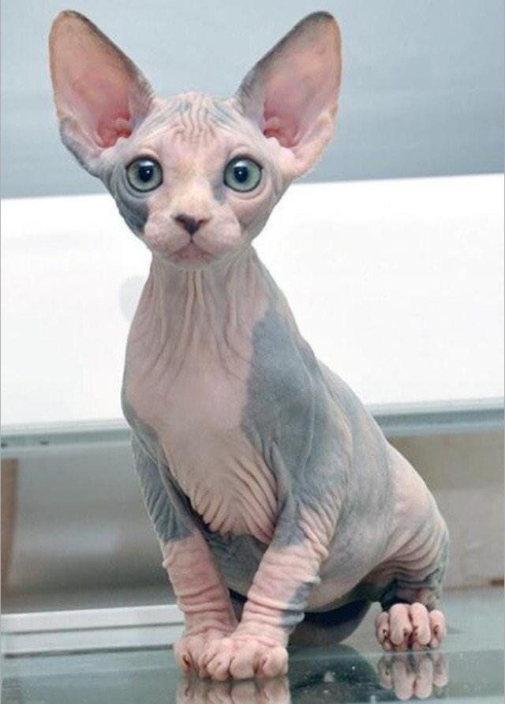
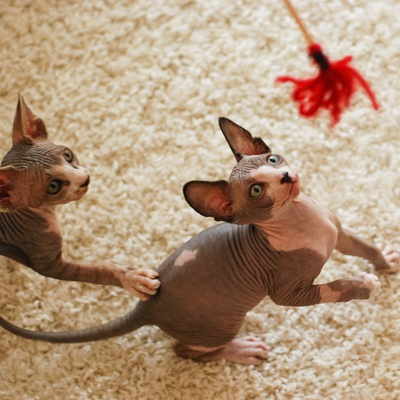

css
Всё о сфинксах
Особенности данной породы
Сфинкс (англ. Sphynx Cat) — порода кошек с экзотической внешностью — «голой» кожей без привычной шерсти. Однако не все представители породы лишены волос полностью: есть животные с небольшим пушком (2–4 мм).

Современная история сфинксов началась в 1960–1970-е годы в Канаде. Породными предками считаются бесшёрстные котята, появившиеся у обычных домашних кошек в канадской провинции Онтарио. Целенаправленная селекция началась в 1970-х годах: бесшёрстных котят скрещивали с «шерстяными» кошками для закрепления гена бесшёрстности и улучшения здоровья.
Внешний вид
- Размер: средний, вес взрослой особи — в среднем от 3 до 5 кг (самцы могут быть чуть тяжелее).
- Тело: мускулистое, с округлыми линиями, грудная клетка часто бочкообразная.
- Лапы: стройные, с аккуратными овальными лапками.
- Голова: клиновидная, с чётко выраженными скулами и сильным подбородком.
- Уши: большие, широкие в основании и немного закруглённые на кончиках.
- Глаза: крупные, лимонной формы, цвет может варьироваться от зелёного до голубого и янтарного.
- Окрасы: допускаются любые, кожа может иметь пятна, полосы и различные оттенки.
- Морщины: у сфинксов нередко ярко выражены кожные складочки вокруг шеи, головы и лап, что считается породным признаком.
Характер
1.Сфинксы — дружелюбные и социальные кошки. Не любят оставаться в одиночестве надолго, предпочитают следовать за хозяином по дому и активно участвовать во всех делах.
2.Любознательны и любвеобильны, обожают «обниматься», искать тепло на руках или под одеялом.
3.Высокий интеллект, легко поддаются обучению.
В мире существует 3 породы кошек-сфинксов:
- Донской сфинкс
- Канадский сфинкс
- Петербургский сфинкс или Петерболд
